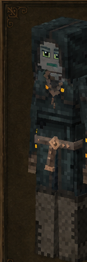
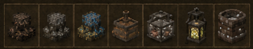

Espeleólogo
Spelunker · código oficial
spelunker · ficha 13/16
Rasgos: 6
Bonus: 7
Malus: 6
Recetas: 27

Resumen humano
minero de riesgo. Muy fuerte en mineral/bateo/explosivos; no sostiene comida.
Esta línea es interpretación funcional breve; lo importante son los números y recetas de abajo.
Bonus objetivos
- ahorro de durabilidad de pico: **+50%** (valor interno `0.5`)
- daño recibido por aplastamiento: **-90%** (valor interno `-0.9`)
- daño recibido por explosión: **-90%** (valor interno `-0.9`)
- drop de mineral: **+100%** (valor interno `1`)
- salida/rendimiento al batear: **+100%** (valor interno `1`)
- velocidad al batear: **+100%** (valor interno `1`)
- velocidad al picar mineral: **+50%** (valor interno `0.5`)
Malus objetivos
- daño con herramientas de piedra: **-20%** (valor interno `-0.2`)
- drop de cultivos silvestres: **-25%** (valor interno `-0.25`)
- drop de forraje/recolección silvestre: **-25%** (valor interno `-0.25`)
- drop/rendimiento de animales: **-10%** (valor interno `-0.1`)
- velocidad al picar piedra: **-10%** (valor interno `-0.1`)
- velocidad de minado con herramientas de piedra: **-20%** (valor interno `-0.2`)
Rasgos oficiales y efectos reales
| Rasgo | Tipo | Datos objetivos |
|---|---|---|
Zapadorsapper | positivo | daño recibido por explosión: -90% (interno -0.9)daño recibido por aplastamiento: -90% (interno -0.9) |
Espeleólogospelunker | positivo | sin atributos numéricos en traits.json; desbloqueo/rasgo de receta |
Bateadorpanner | positivo | salida/rendimiento al batear: +100% (interno 1)velocidad al batear: +100% (interno 1) |
Prospectorprospector | positivo | drop de mineral: +100% (interno 1)velocidad al picar mineral: +50% (interno 0.5)ahorro de durabilidad de pico: +50% (interno 0.5) |
Petrofóbicopetrophobe | negativo | velocidad al picar piedra: -10% (interno -0.1)velocidad de minado con herramientas de piedra: -20% (interno -0.2)daño con herramientas de piedra: -20% (interno -0.2) |
Protegidosheltered | negativo | drop de forraje/recolección silvestre: -25% (interno -0.25)drop de cultivos silvestres: -25% (interno -0.25)drop/rendimiento de animales: -10% (interno -0.1) |
Recetas / desbloqueos
20mesa normal
7estación
0compatibilidad
27salidas listadas
Categorías detectadas
Molienda: 11Cuba de mezclas y alquimia: 7Bombas y explosivos: 5Tierra mineral para batear: 3Faroles y linternas: 1
Ver salidas exactas de recetas de esta clase (27)
| Modo | Categoría legible | Resultado legible | Nombre ES |
|---|---|---|---|
| mesa de crafteo normal | Bombas y explosivos | Bomb mineral ×8 | — |
| mesa de crafteo normal | Bombas y explosivos | Bomb piedra ×8 | — |
| mesa de crafteo normal | Bombas y explosivos | Bomb scrap ×8 | — |
| mesa de crafteo normal | Bombas y explosivos | Bomb scrap ×8 | — |
| mesa de crafteo normal | Bombas y explosivos | Bomb scrap ×8 | — |
| mesa de crafteo normal | Molienda | Lime ×2 | — |
| mesa de crafteo normal | Molienda | Salt ×4 | — |
| mesa de crafteo normal | Molienda | Powder oretype ×4 | — |
| mesa de crafteo normal | Molienda | Saltpeter ×2 | — |
| mesa de crafteo normal | Molienda | Powder sílex ×2 | — |
| mesa de crafteo normal | Molienda | Powder alumbre ×2 | — |
| mesa de crafteo normal | Molienda | Powder charcoal ×2 | — |
| mesa de crafteo normal | Molienda | Bonemeal ×2 | — |
| mesa de crafteo normal | Molienda | Bonemeal ×1 | — |
| mesa de crafteo normal | Molienda | Powder iron oxide ×4 | — |
| mesa de crafteo normal | Molienda | Powder iron oxide ×4 | — |
| mesa de crafteo normal | Faroles y linternas | Spelunkinglantern ×1 | — |
| mesa de crafteo normal | Tierra mineral para batear | Tierra mineral carbonosa ×1 | — |
| mesa de crafteo normal | Tierra mineral para batear | Tierra mineral cristalina ×1 | — |
| mesa de crafteo normal | Tierra mineral para batear | Tierra mineral metálica ×1 | — |
| estación especial | Cuba de mezclas y alquimia | Tierra mineral carbonosa ×1 | — |
| estación especial | Cuba de mezclas y alquimia | Tierra mineral cristalina ×1 | — |
| estación especial | Cuba de mezclas y alquimia | Tierra mineral metálica ×1 | — |
| estación especial | Cuba de mezclas y alquimia | Lime ×4 | — |
| estación especial | Cuba de mezclas y alquimia | Saltpeter ×8 | — |
| estación especial | Cuba de mezclas y alquimia | Salt ×4 | — |
| estación especial | Cuba de mezclas y alquimia | Powder oretype ×4 | — |
Archivos de esta ficha
Markdown corregido · PNG corregido · Fuente objetiva original si existe
{kind=link}